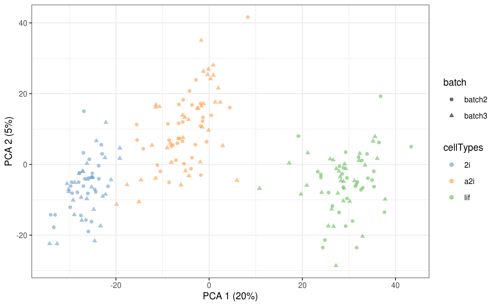
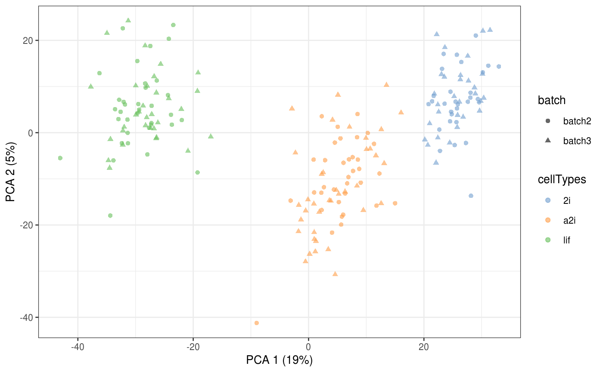
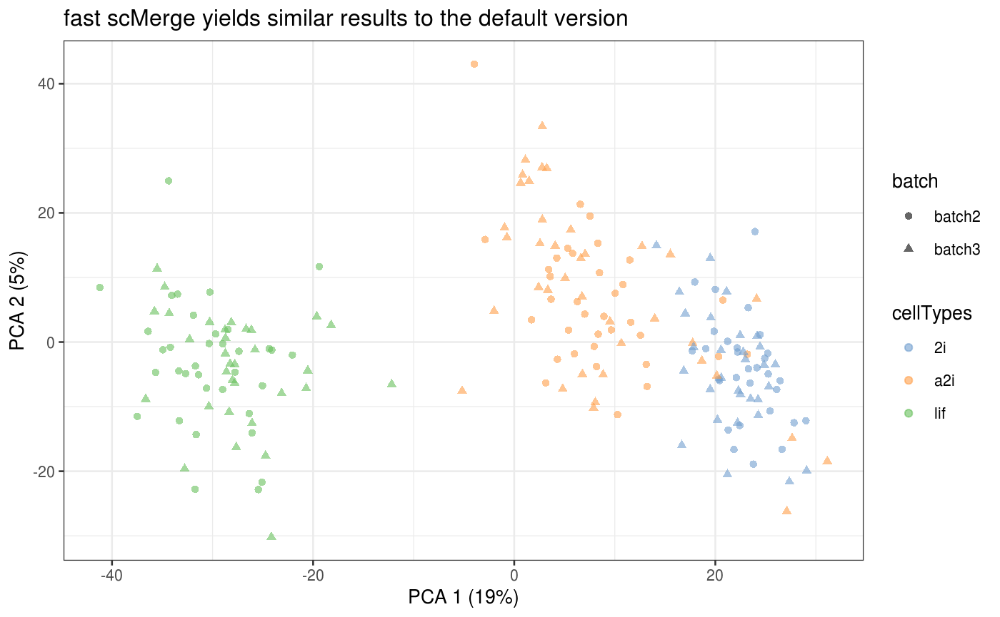

An introduction to the scMerge package
Yingxin Lin
School of Mathematics and Statistics, The University of Sydney, AustraliaKevin Y.X. Wang
School of Mathematics and Statistics, The University of Sydney, AustraliaSource:
vignettes/scMerge.Rmd
scMerge.RmdIntroduction
The scMerge algorithm allows batch effect removal and normalisation for single cell RNA-Seq data. It comprises of three key components including:
- The identification of stably expressed genes (SEGs) as “negative controls” for estimating unwanted factors;
- The construction of pseudo-replicates to estimate the effects of unwanted factors; and
- The adjustment of the datasets with unwanted variation using a fastRUVIII model.
The purpose of this vignette is to illustrate some uses of scMerge and explain its key components.
Loading Packages and Data
We will load the scMerge package. We designed our package to be consistent with the popular BioConductor’s single cell analysis framework, namely the SingleCellExperiment and scater package.
We provided an illustrative mouse embryonic stem cell (mESC) data in our package, as well as a set of pre-computed stably expressed gene (SEG) list to be used as negative control genes.
The full curated, unnormalised mESC data can be found here. The scMerge package comes with a sub-sampled, two-batches version of this data (named “batch2” and “batch3” to be consistent with the full data) .
In this mESC data, we pooled data from 2 different batches from three different cell types. Using a PCA plot, we can see that despite strong separation of cell types, there is also a strong separation due to batch effects. This information is stored in the colData of example_sce.
example_sce = runPCA(example_sce, exprs_values = "logcounts")
scater::plotPCA(
example_sce,
colour_by = "cellTypes",
shape_by = "batch")
Illustrating pseudo-replicates constructions
The first major component of scMerge is to obtain negative controls for our normalisation. In this vignette, we will be using a set of pre-computed SEGs from a single cell mouse data made available through the segList_ensemblGeneID data in our package. For more information about the selection of negative controls and SEGs, please see Section select SEGs.
## single-cell stably expressed gene list
data("segList_ensemblGeneID", package = "scMerge")
head(segList_ensemblGeneID$mouse$mouse_scSEG)
#> [1] "ENSMUSG00000058835" "ENSMUSG00000026842" "ENSMUSG00000027671"
#> [4] "ENSMUSG00000020152" "ENSMUSG00000054693" "ENSMUSG00000049470"The second major component of scMerge is to compute pseudo-replicates for cells so we can perform normalisation. We offer three major ways of computing this pseudo-replicate information:
- Unsupervised clustering, using k-means clustering;
- Supervised clustering, using known cell type information; and
- Semi-supervised clustering, using partially known cell type information.
Unsupervised scMerge
In unsupervised scMerge, we will perform a k-means clustering to obtain pseudo-replicates. This requires the users to supply a kmeansK vector with each element indicating number of clusters in each of the batches. For example, we know “batch2” and “batch3” both contain three cell types. Hence, kmeansK = c(3, 3) in this case.
scMerge_unsupervised <- scMerge(
sce_combine = example_sce,
ctl = segList_ensemblGeneID$mouse$mouse_scSEG,
kmeansK = c(3, 3),
assay_name = "scMerge_unsupervised")
#> Step 2: Performing RUV normalisation. This will take minutes to hours.
#> scMerge complete!We now colour construct the PCA plot again on our normalised data. We can observe a much better separation by cell type and less separation by batches.
Selecting all cells
By default, scMerge only uses 50% of the cells to perform kmeans clustering. While this is sufficient to perform a satisfactory normalisation in most cases, users can control if they wish all cells be used in the kmeans clustering.
scMerge_unsupervised_all <- scMerge(
sce_combine = example_sce,
ctl = segList_ensemblGeneID$mouse$mouse_scSEG,
kmeansK = c(3, 3),
assay_name = "scMerge_unsupervised_all",
replicate_prop = 1)
#> Step 2: Performing RUV normalisation. This will take minutes to hours.
#> scMerge complete!scMerge_unsupervised_all = runPCA(scMerge_unsupervised_all,
exprs_values = "scMerge_unsupervised_all")
scater::plotPCA(
scMerge_unsupervised_all,
colour_by = "cellTypes",
shape_by = "batch")
Supervised scMerge
If all cell type information is available to the user, then it is possible to use this information to create pseudo-replicates. This can be done through the cell_type argument in the scMerge function.
scMerge_supervised <- scMerge(
sce_combine = example_sce,
ctl = segList_ensemblGeneID$mouse$mouse_scSEG,
kmeansK = c(3, 3),
assay_name = "scMerge_supervised",
cell_type = example_sce$cellTypes)
#> Step 2: Performing RUV normalisation. This will take minutes to hours.
#> scMerge complete!scMerge_supervised = runPCA(scMerge_supervised,
exprs_values = "scMerge_supervised")
scater::plotPCA(
scMerge_supervised,
colour_by = "cellTypes",
shape_by = "batch")
Semi-supervised scMerge I
If the user is only able to access partial cell type information, then it is still possible to use this information to create pseudo-replicates. This can be done through the cell_type and cell_type_inc arguments in the scMerge function. cell_type_inc should contain a vector of indices indicating which elements in the cell_type vector should be used to perform semi-supervised scMerge.
scMerge_semisupervised1 <- scMerge(
sce_combine = example_sce,
ctl = segList_ensemblGeneID$mouse$mouse_scSEG,
kmeansK = c(3,3),
assay_name = "scMerge_semisupervised1",
cell_type = example_sce$cellTypes,
cell_type_inc = which(example_sce$cellTypes == "2i"),
cell_type_match = FALSE)
#> Step 2: Performing RUV normalisation. This will take minutes to hours.
#> scMerge complete!scMerge_semisupervised1 = runPCA(scMerge_semisupervised1,
exprs_values = "scMerge_semisupervised1")
scater::plotPCA(
scMerge_semisupervised1,
colour_by = "cellTypes",
shape_by = "batch")
Semi-supervised scMerge II
There is alternative semi-supervised method to create pseudo-replicates for scMerge. This uses known cell type information to identify mutual nearest clusters and it is achieved via the cell_type and cell_type_match = TRUE options in the scMerge function.
scMerge_semisupervised2 <- scMerge(
sce_combine = example_sce,
ctl = segList_ensemblGeneID$mouse$mouse_scSEG,
kmeansK = c(3, 3),
assay_name = "scMerge_semisupervised2",
cell_type = example_sce$cellTypes,
cell_type_inc = NULL,
cell_type_match = TRUE)
#> Step 2: Performing RUV normalisation. This will take minutes to hours.
#> scMerge complete!scMerge_semisupervised2 = runPCA(scMerge_semisupervised2,
exprs_values = "scMerge_semisupervised2")
scater::plotPCA(
scMerge_semisupervised2,
colour_by = "cellTypes",
shape_by = "batch")
Selecting negative controls
In simple terms, a negative control is a gene that has expression values relatively constant across these datasets. The concept of using these negative control genes for normalisation was most widely used in the RUV method family (e.g. Gagnon-Bartsch & Speed (2012) and Risso et. al. (2014)) and there exist multiple methods to find these negative controls. In our paper, we recommened the SEGs as negative controls for scRNA-Seq data and SEGs can be found using either a data-adaptive computational method or external knowledge.
- Computation method: We provide the function
scSEGIndexto calculate the SEG from a data matrix. The output of this function is adata.framewith a SEG index calculated for each gene. See Lin et. al. (2018) for more details.
exprs_mat = SummarizedExperiment::assay(example_sce, 'counts')
result = scSEGIndex(exprs_mat = exprs_mat)- External knowledge: We have applied the SEG computational methodology on multiple human and mouse scRNA-Seq data and made these available as data objects in our package. The end-users can simply use these pre-computed results. There are also additional negative controls from bulk microarray and bulkd RNA-Seq data.
## SEG list in ensemblGene ID
data("segList_ensemblGeneID", package = "scMerge")
## SEG list in official gene symbols
data("segList", package = "scMerge")
## SEG list for human scRNA-Seq data
head(segList$human$human_scSEG)
#> [1] "AAR2" "AATF" "ABCF3" "ABHD2" "ABT1" "ACAP2"
## SEG list for human bulk microarray data
head(segList$human$bulkMicroarrayHK)
#> [1] "AATF" "ABL1" "ACAT2" "ACTB" "ACTG1" "ACTN4"
## SEG list for human bulk RNASeq data
head(segList$human$bulkRNAseqHK)
#> [1] "AAGAB" "AAMP" "AAR2" "AARS" "AARS2" "AARSD1"Achieving fast computation
Using approximated SVD
Under most circumstances, scMerge is fast enough to be used on a personal laptop for a moderately large data. However, we do recognise the difficulties associated with computation when dealing with larger data. To this end, we devised a fast version of scMerge. The major difference between the two versions lies on the noise estimation component, which utilised singular value decomposition (SVD). In order to speed up scMerge, we used BiocSingular package that offers several SVD speed improvements. This computational method is able to speed up scMerge by obtain a very accurate approximation of the noise structure in the data. This option is achieved via the option BSPARAM = IrlbaParam() or BSPARAM = RandomParam(). Additionally, svd_k is a parameter that controlling the degree of approximations.
We recommend using this option in the case where the number of cells is large in your single cell data. The speed advantage we obtain for large single cell data is much more dramatic than on a smaller dataset like the example mESC data. For example, a single run of normal scMerge on a human pancreas data (23699 features and 4566 cells) takes about 10 minutes whereas the speed up version takes just under 4 minutes.
library(BiocSingular)
scMerge_fast <- scMerge(
sce_combine = example_sce,
ctl = segList_ensemblGeneID$mouse$mouse_scSEG,
kmeansK = c(3, 3),
assay_name = "scMerge_fast",
BSPARAM = IrlbaParam(),
svd_k = 20)
#> Step 2: Performing RUV normalisation. This will take minutes to hours.
#> scMerge complete!paste("Normally, scMerge takes ", round(t2 - t1, 2), " seconds")
#> [1] "Normally, scMerge takes 0.71 seconds"
paste("Fast version of scMerge takes ", round(t4 - t3, 2), " seconds")
#> [1] "Fast version of scMerge takes 0.49 seconds"
scMerge_fast = runPCA(scMerge_fast, exprs_values = "scMerge_fast")
scater::plotPCA(
scMerge_fast,
colour_by = "cellTypes",
shape_by = "batch") +
labs(title = "fast scMerge yields similar results to the default version")
Parallelised computing
scMerge is implemented with a parallelised computational option via the BiocParallel package. You can enable this option using the BPPARAM argument with various BiocParallelParam objects that is suitable for your operating system.
Please note that any parallelisation would incur a small overhead. Hence we recommend you do not use parallelisation for small data.
Reference
Please check out our paper for detailed analysis and results on multiple scRNA-Seq data. https://www.biorxiv.org/content/10.1101/393280v2
citation("scMerge")
#>
#> To cite scMerge in publications please use:
#>
#> Lin Y, Ghazanfar S, Wang K, Gagnon-Bartsch J, Lo K, Su X, Han Z,
#> Ormerod J, Speed T, Yang P, Yang J (2019). "scMerge leverages factor
#> analysis, stable expression, and pseudoreplication to merge multiple
#> single-cell RNA-seq datasets." _Proceedings of the National Academy of
#> Sciences_. doi: 10.1073/pnas.1820006116 (URL:
#> https://doi.org/10.1073/pnas.1820006116), <URL:
#> http://www.pnas.org/lookup/doi/10.1073/pnas.1820006116>.
#>
#> A BibTeX entry for LaTeX users is
#>
#> @Article{,
#> title = {{scMerge leverages factor analysis, stable expression, and pseudoreplication to merge multiple single-cell RNA-seq datasets}},
#> author = {Yingxin Lin and Shila Ghazanfar and Kevin Wang and Johann Gagnon-Bartsch and Kitty Lo and Xianbin Su and Ze-Guang Han and John Ormerod and Terence Speed and Pengyi Yang and Jean Yang},
#> year = {2019},
#> journal = {Proceedings of the National Academy of Sciences},
#> doi = {https://doi.org/10.1073/pnas.1820006116},
#> url = {http://www.pnas.org/lookup/doi/10.1073/pnas.1820006116},
#> }Session Info
sessionInfo()
#> R version 3.6.1 (2017-01-27)
#> Platform: x86_64-pc-linux-gnu (64-bit)
#> Running under: Ubuntu 14.04.5 LTS
#>
#> Matrix products: default
#> BLAS: /home/travis/R-bin/lib/R/lib/libRblas.so
#> LAPACK: /home/travis/R-bin/lib/R/lib/libRlapack.so
#>
#> locale:
#> [1] LC_CTYPE=en_US.UTF-8 LC_NUMERIC=C
#> [3] LC_TIME=en_US.UTF-8 LC_COLLATE=en_US.UTF-8
#> [5] LC_MONETARY=en_US.UTF-8 LC_MESSAGES=en_US.UTF-8
#> [7] LC_PAPER=en_US.UTF-8 LC_NAME=C
#> [9] LC_ADDRESS=C LC_TELEPHONE=C
#> [11] LC_MEASUREMENT=en_US.UTF-8 LC_IDENTIFICATION=C
#>
#> attached base packages:
#> [1] parallel stats4 stats graphics grDevices utils datasets
#> [8] methods base
#>
#> other attached packages:
#> [1] BiocSingular_1.2.0 scater_1.14.6
#> [3] ggplot2_3.2.1 scMerge_1.3.0
#> [5] SingleCellExperiment_1.8.0 SummarizedExperiment_1.16.0
#> [7] DelayedArray_0.12.0 BiocParallel_1.20.0
#> [9] matrixStats_0.55.0 Biobase_2.46.0
#> [11] GenomicRanges_1.38.0 GenomeInfoDb_1.22.0
#> [13] IRanges_2.20.1 S4Vectors_0.24.1
#> [15] BiocGenerics_0.32.0 BiocStyle_2.14.2
#>
#> loaded via a namespace (and not attached):
#> [1] nlme_3.1-143 bitops_1.0-6 fs_1.3.1
#> [4] RColorBrewer_1.1-2 rprojroot_1.3-2 numDeriv_2016.8-1.1
#> [7] tools_3.6.1 backports_1.1.5 R6_2.4.1
#> [10] irlba_2.3.3 vipor_0.4.5 rpart_4.1-15
#> [13] KernSmooth_2.23-16 mgcv_1.8-31 Hmisc_4.3-0
#> [16] lazyeval_0.2.2 colorspace_1.4-1 nnet_7.3-12
#> [19] withr_2.1.2 gridExtra_2.3 compiler_3.6.1
#> [22] BiocNeighbors_1.4.1 htmlTable_1.13.3 desc_1.2.0
#> [25] labeling_0.3 bookdown_0.16 sfsmisc_1.1-4
#> [28] caTools_1.17.1.3 scales_1.1.0 checkmate_1.9.4
#> [31] proxy_0.4-23 pkgdown_1.4.1.9000 stringr_1.4.0
#> [34] digest_0.6.23 foreign_0.8-72 rmarkdown_2.0
#> [37] XVector_0.26.0 base64enc_0.1-3 pkgconfig_2.0.3
#> [40] htmltools_0.4.0 ruv_0.9.7.1 bbmle_1.0.20
#> [43] htmlwidgets_1.5.1 rlang_0.4.2 rstudioapi_0.10
#> [46] DelayedMatrixStats_1.8.0 farver_2.0.1 gtools_3.8.1
#> [49] acepack_1.4.1 RCurl_1.95-4.12 magrittr_1.5
#> [52] GenomeInfoDbData_1.2.2 Formula_1.2-3 Matrix_1.2-18
#> [55] ggbeeswarm_0.6.0 Rcpp_1.0.3 munsell_0.5.0
#> [58] viridis_0.5.1 distr_2.8.0 lifecycle_0.1.0
#> [61] stringi_1.4.3 yaml_2.2.0 MASS_7.3-51.4
#> [64] zlibbioc_1.32.0 gplots_3.0.1.1 grid_3.6.1
#> [67] gdata_2.18.0 M3Drop_1.12.0 reldist_1.6-6
#> [70] crayon_1.3.4 lattice_0.20-38 splines_3.6.1
#> [73] startupmsg_0.9.6 knitr_1.26 pillar_1.4.2
#> [76] igraph_1.2.4.2 evaluate_0.14 latticeExtra_0.6-28
#> [79] data.table_1.12.8 BiocManager_1.30.10 gtable_0.3.0
#> [82] assertthat_0.2.1 xfun_0.11 rsvd_1.0.2
#> [85] viridisLite_0.3.0 survival_3.1-8 tibble_2.1.3
#> [88] beeswarm_0.2.3 memoise_1.1.0 cluster_2.1.0
#> [91] statmod_1.4.32